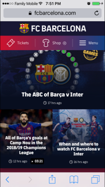

Proximity
Netflix
Go to Netflix
Proximity in design simply means that objects near each other are seen as a unit.
It really is that simple and it’s something you see every day.
Looking at their home page, you can see that everything is close perfectly with each other.
The "Sign in" button is visible and is well in the proximity with the free trial run below.
Alignment
Walmart
Go to Walmart
 Alignment on walmart website is actually quite good.
Looking at their home page, you can see that everything lines
up perfectly with each other.The "Sign in" button is visible
and is well align with the free trial run below. Alignment helps
to distribute space between grid tracks
Alignment on walmart website is actually quite good.
Looking at their home page, you can see that everything lines
up perfectly with each other.The "Sign in" button is visible
and is well align with the free trial run below. Alignment helps
to distribute space between grid tracks
Contrast
Barcelona
Go to fcbarcelona

The CSS contrast() function is used with the filter property to adjust the contrast
of an image.This argument determines the contrast level that's applied to the image. on the
Barcelona website screenshot I used -webkit-filter: brightness(180%) and filter: brightness(180%)